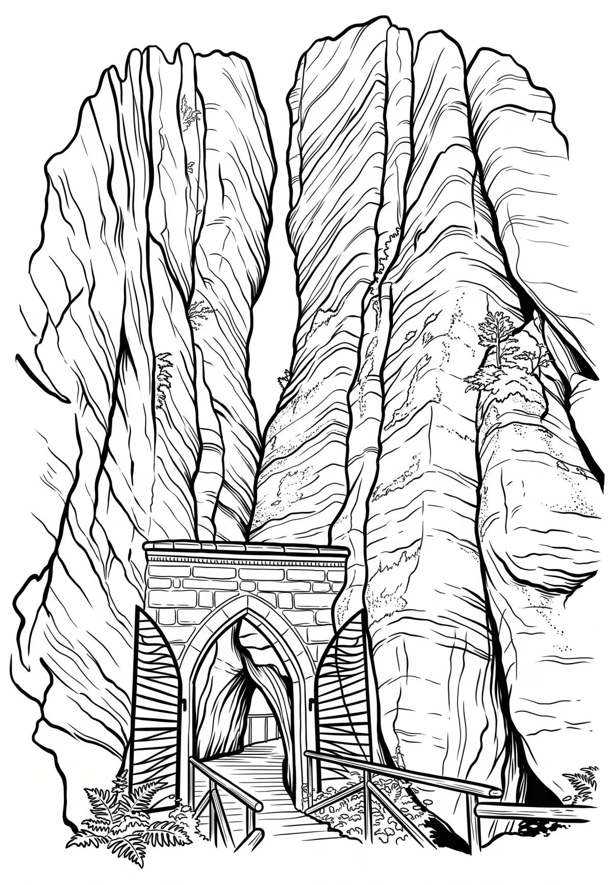

Adršpašské skalní město
Národní přírodní rezervace Adršpašsko-teplické skály (německy Adersbach-Weckelsdorfer Felsenstadt) byla vyhlášena již v roce 1933 na rozloze 1771 ha k ochraně zachovalých celků skalních měst. Chráněné území je od 1. června 2015 ve správě regionálního pracoviště Východní Čechy Agentury ochrany přírody a krajiny ČR. Národní přírodní rezervace se nachází na území okresů Náchod a Trutnov.
Více na Wikipedii